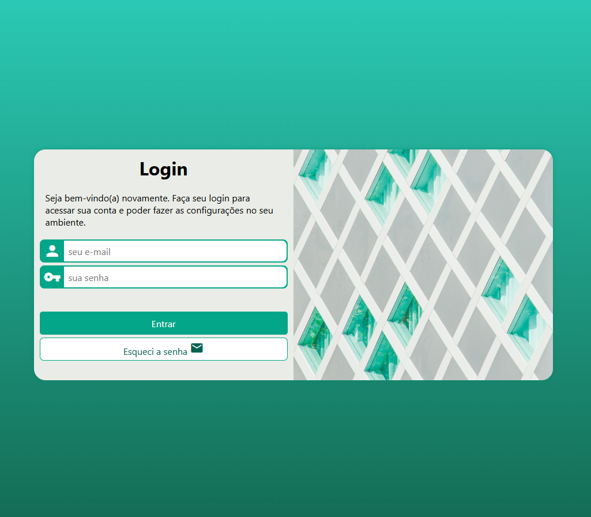

Projeto Login
Este projeto consiste em uma página de login desenvolvida com HTML e CSS, projetada para proporcionar uma experiência de usuário intuitiva e visualmente atraente. A página é estruturada de forma a facilitar o acesso dos usuários às suas contas, permitindo que realizem login de maneira rápida e eficiente.
A interface é composta por um layout centralizado que apresenta um formulário de login, acompanhado de uma imagem de fundo que complementa a estética geral. O design utiliza uma paleta de cores harmoniosa, com um fundo verde esmeralda (#03A688) e elementos em branco (#EAECE7), criando um contraste agradável e facilitando a leitura.
No topo da página, um cabeçalho acolhedor dá boas-vindas ao usuário
incentivando-o a inserir
suas credenciais. O formulário inclui campos para o e-mail e a senha, ambos com ícones representativos que
melhoram a usabilidade. O campo de senha possui validação de comprimento, garantindo que o usuário insira
uma senha segura.
Além do botão de envio, que se destaca com uma cor de fundo verde e muda para um tom mais escuro ao passar o
mouse, a página também oferece um link para recuperação de senha, proporcionando uma solução prática para
usuários que possam ter esquecido suas credenciais.
No topo da página, um cabeçalho acolhedor dá boas-vindas ao usuário, incentivando-o a inserir suas credenciais. O formulário inclui campos para o e-mail e a senha, ambos com ícones representativos que melhoram a usabilidade. O campo de senha possui validação de comprimento, garantindo que o usuário insira uma senha segura. Além do botão de envio, que se destaca com uma cor de fundo verde e muda para um tom mais escuro ao passar o mouse, a página também oferece um link para recuperação de senha, proporcionando uma solução prática para usuários que possam ter esquecido suas credenciais.
